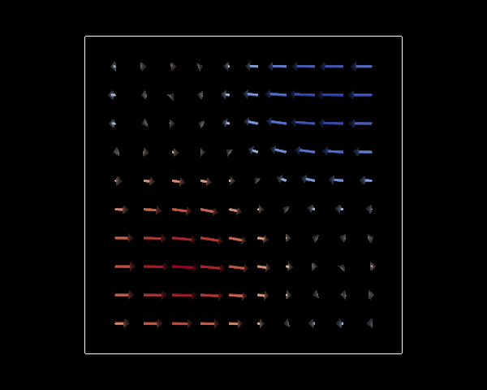
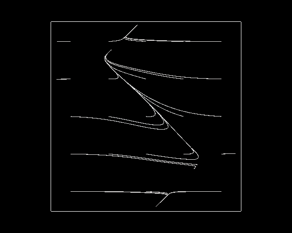
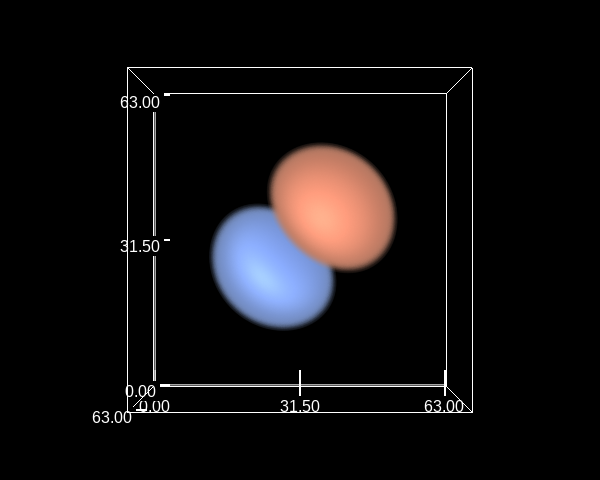

Generic Workflow¶
This shows an example workflow with vapor. We begin by creating a session and opening a dataset. You can have multiple sessions open at the same time.
import example_utils
from vapor import session, renderer, dataset, camera
---------------------------------------------------------------------------
ModuleNotFoundError Traceback (most recent call last)
Cell In[1], line 1
----> 1 import example_utils
2 from vapor import session, renderer, dataset, camera
ModuleNotFoundError: No module named 'example_utils'
ses = session.Session()
data = example_utils.OpenExampleDataset(ses)
Dump the dataset metadata¶
print("Time Coordinate Variable Name:", data.GetTimeCoordVarName())
print("Coordinate Variable Names:", data.GetCoordVarNames())
print("Dimensions:")
for dim in data.GetDimensionNames():
print(f" {dim}:", data.GetDimensionLength(dim, 0))
print("Data Variables:")
for var in data.GetDataVarNames():
print(f" {var}")
print(f" Time Varying:", bool(data.IsTimeVarying(var)))
print(f" Dimensionality:", data.GetVarGeometryDim(var))
print(f" Coordinates:", data.GetVarCoordVars(var, True))
print(" Data Range:", data.GetDataRange(var))
Time Coordinate Variable Name:
Coordinate Variable Names: ['__regCoord_64_x', '__regCoord_64_y', '__regCoord_64_z']
Dimensions:
__regDim_64: 64
Data Variables:
U10
Time Varying: False
Dimensionality: 2
Coordinates: ['__regCoord_64_x', '__regCoord_64_y']
Data Range: [-1.9993805885314941, 1.9994730949401855]
V10
Time Varying: False
Dimensionality: 2
Coordinates: ['__regCoord_64_x', '__regCoord_64_y']
Data Range: [-0.2711198925971985, 0.2711198925971985]
V
Time Varying: False
Dimensionality: 3
Coordinates: ['__regCoord_64_x', '__regCoord_64_y', '__regCoord_64_z']
Data Range: [-0.3319709300994873, 0.3319709300994873]
Render the first 2D variable as a pseudocolor¶
first_2d_var = data.GetDataVarNames(2)[0]
print(f"Rendering 2D variable {first_2d_var}")
ren = data.NewRenderer(renderer.TwoDDataRenderer)
ren.SetVariableName(first_2d_var)
ren.GetPrimaryTransferFunction().SetMinMapValue(-1)
ren.GetPrimaryTransferFunction().SetMaxMapValue(1)
ses.GetCamera().ViewAll()
ses.Show()
ses.DeleteRenderer(ren)
Rendering 2D variable U10
Render U10 and V10 as barbs over a map¶
# If your dataset is geo-referenced, this will automatically render a geographically correct map.
# map_ren = data.NewRenderer(renderer.ImageRenderer)
barbs = data.NewRenderer(renderer.BarbRenderer)
barbs.SetDimensions(2)
barbs.SetFieldVariableNames(['U10', 'V10'])
barbs.SetLineThickness(2)
ses.Show()
ses.DeleteRenderer(barbs)

Simulate and render a flow advection¶
flow = data.NewRenderer(renderer.FlowRenderer)
flow.SetFieldVariableNames(['U10', 'V10'])
ses.Show()
ses.DeleteRenderer(flow)

Volume render a 3D variable¶
volume = data.NewRenderer(renderer.VolumeRenderer)
volume.SetVariableName("V")
tf = volume.GetPrimaryTransferFunction()
tf.SetOpacityList([1, 0, 0, 1])
ses.GetCamera().ViewAll()
ses.Show()
# Show a colorbar for the volume rendering
tf.ShowMatPlotLibColorbar(label="V")
UNSUPPORTED (log once): POSSIBLE ISSUE: unit 3 GLD_TEXTURE_INDEX_3D is unloadable and bound to sampler type (Float) - using zero texture because texture unloadable
Scale the dataset Z axis¶
Vapor will automatically scale the Z axis of a dataset to produce reasonable results. This can be manually adjusted as shown below.
scales = data.GetTransform().GetScales()
print("Default dataset scaling =", scales);
scales[2] *= 0.3
data.GetTransform().SetScales(scales)
print("New dataset scaling =", data.GetTransform().GetScales());
ses.Show()
Default dataset scaling = [1.0, 1.0, 1.0]
New dataset scaling = [1.0, 1.0, 0.3]
Add axis annotations to the rendering¶
annotations = ses.GetAxisAnnotations()
annotations.SetAxisAnnotationEnabled(True)
ses.Show()

Export the session for use in the Vapor GUI application¶
Sessions created in Python can be saved as a .vs3 file.
These files can then be opened in the Vapor GUI application and explored interactively.
Conversely, sessions created in the Vapor GUI can be loaded into Python with Session.Load(path)
Since this example uses a dynamically generated dataset, the session cannot be saved as it would point to a dataset that does not exist on disk. If you were using a physical dataset, this would work.
ses.Save("tutorial.vs3")
[Session.cpp:121] Cannot save session that contains data dynamically loaded from python (dataset.PYTHON)
-1